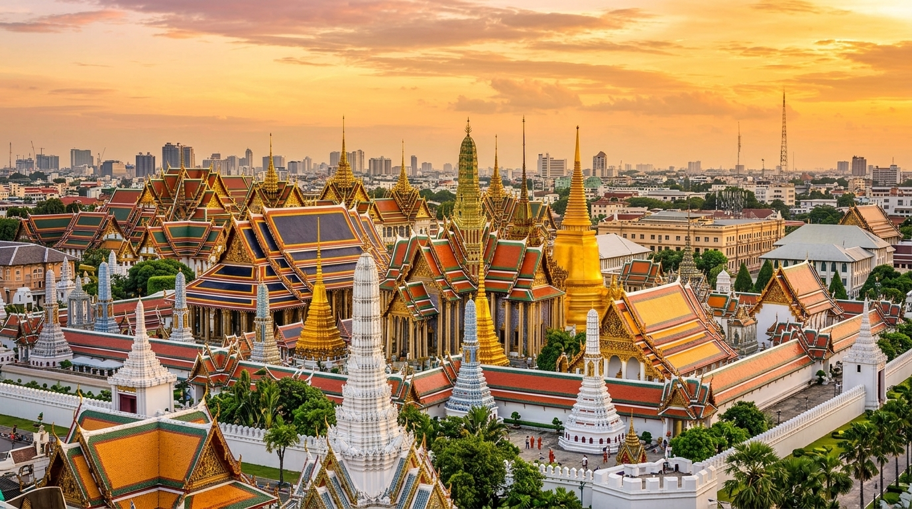
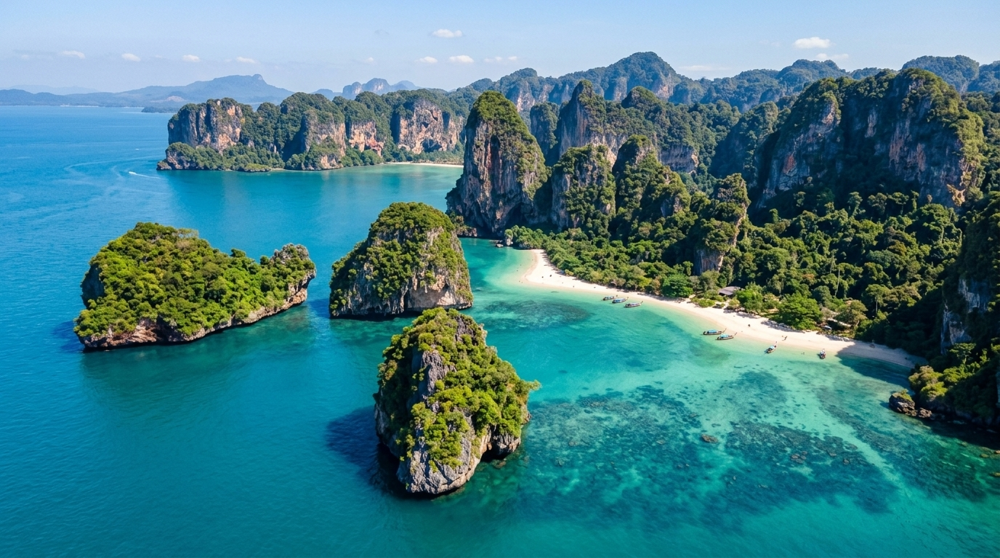
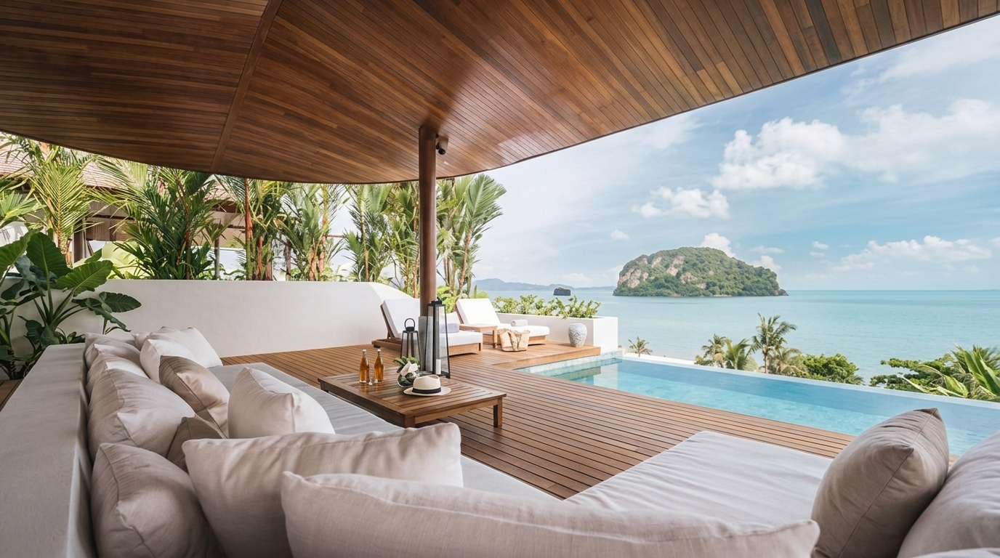
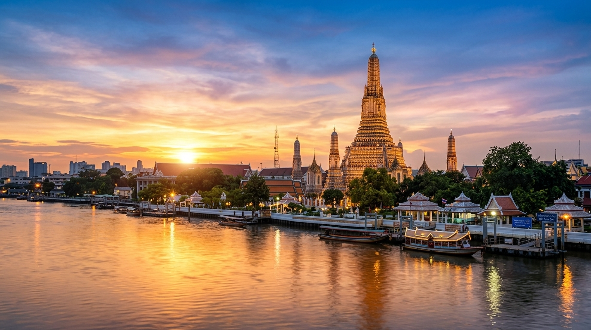
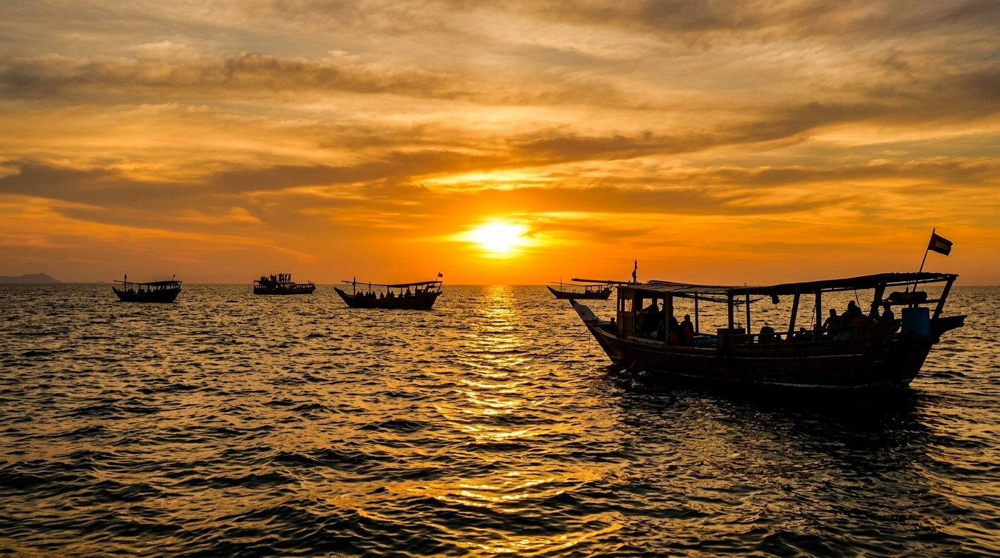

Combine Bangkok's majestic Grand Palace and Michelin street food with direct flights south to Phang Nga Bay for private villa luxury on Koh Yao Yai island.
Key regional features, luxury accommodation standards, and seamless logistics that make Bangkok & Koh Yao Yai an effortless recommendation for your travelers.

Marvel at Thailand's royal porcelain spires, Reclining Buddha at Wat Pho, and private longtail boat canal rides.

Dramatic emerald sea monoliths, pristine secluded beaches, and calm turquoise waters in Phang Nga Bay.

Ultra-luxurious island hideaway featuring private infinity pool villas and sunset catamaran cruises.

VIP morning tour of the Emerald Buddha followed by a private longtail boat cruise through Thonburi khlongs.
Inquire for more details →
Private catamaran charter exploring James Bond island karsts ending at Anantara beachfront villa.
Inquire for more details →5-star secluded luxury sanctuary featuring lagoon pool villas, private white sand beach, and spa wellness.
Inquire for more details →Award-winning 5-star urban resort offering riverfront suites, Michelin dining, and personal butler service.
Inquire for more details →Pandora Travel provides VIP tarmac fast-tracks, luxury chauffeured MPVs, and private boat charters across Southeast Asia.
Optimal travel window runs October through April with dry, pleasant temperatures across Vietnam, Cambodia, and Thailand.
Private rice field candlelit dinners, rooftop mixology masterclasses, and curated street gastronomy crawls with expert hosts.
Combine Bangkok & Koh Yao Yai with direct regional flights or private river cruises to maximize seamless transit across Indochina highlights.